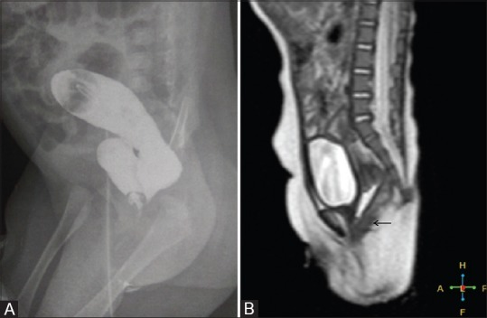
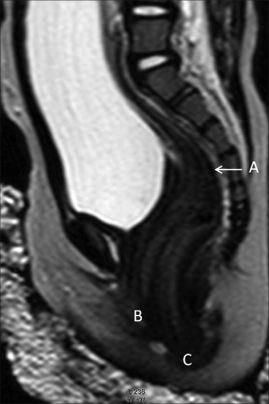
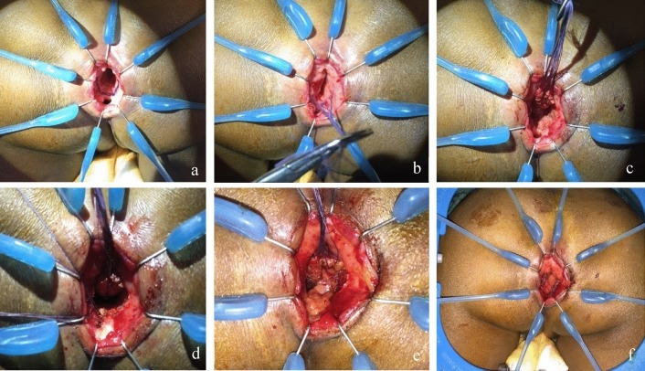

1734 — Rò trực tràng–âm đạo ở trẻ em / Rectovaginal fistula in children
Tags: pattern:ro pattern:mat-lien-tuc-thanh pattern:khong-thay-hau-mon pattern:u-dich vung:truc-trang vung:am-dao vung:khung-chau vung:sinh-duc-nhi protocol:MRI-chau protocol:chup-ro-can-quang protocol:SA-transperineal protocol:noi-soi score:Krickenbeck
Mức chắc chắn (certainty): tổng hợp y văn (literature synthesis) — dựa trên 1 nghiên cứu MRI – chụp lưu can quang ở 30 trẻ dị tật hậu môn–trực tràng (PMC6038223), 1 đoàn hệ 10 trẻ rò trực tràng–âm đạo do HIV (PMC11230961), 1 đoàn hệ phẫu thuật bảo tồn thân sàn chậu 26 trẻ (PMC13269148), và 1 nghiên cứu về chỉ định hậu môn nhân tạo ở thể rò thấp (PMC13182093).
1. Tổng quan — vì sao rò hình thành và vì sao phải chụp theo mặt phẳng dọc
- Dị tật hậu môn–trực tràng (anorectal malformation, ARM): ống hậu môn không thông ra da; trực tràng tận cùng bằng túi cùng (rectal pouch) và thường có đường rò ra niệu đạo (nam) hoặc tiền đình âm đạo/âm đạo (nữ). Tỉ lệ 1/4.000–1/5.000 trẻ sinh sống; là dị tật tiêu hóa hay gặp nhất ở trẻ.
- Vì sao nữ hay rò ra tiền đình: ống hậu môn và xoang niệu–sinh dục cùng phôi sinh từ vách ngăn hậu môn–trực tràng (urorectal septum); vách xuống không hết → trực tràng thông vào tiền đình âm đạo (rectovestibular fistula) — thể hay gặp nhất ở nữ; thể rò trực tràng–âm đạo thật nằm cao hơn, qua thành âm đạo.
- Vì sao thể H-type khó: trực tràng và hậu môn bình thường, đường rò đi từ trực tràng ra tiền đình như một kênh ngang chữ H — trẻ vẫn đi cầu qua hậu môn nên rò không gây tắc, dễ bỏ sót; có thể có 4 lỗ (hậu môn, âm đạo, lỗ rò, niệu đạo).
- Vì sao MRI mặt phẳng dọc (sagittal) là chốt: niêm mạc trực tràng tăng tín hiệu T2 đánh dấu chính xác đáy túi cùng; phức hợp cơ thắt (sphincter muscle complex) giảm tín hiệu trên T2 cho biết túi nằm trên/dưới sàn chậu; mặt phẳng dọc giữa cho thấy quan hệ trực tràng – âm đạo – niệu đạo – xương cùng trong một lát cắt.
- Vì sao chụp lưu can quang (distal colostogram) vẫn cần: bơm thuốc áp lực cao qua lỗ rò của hậu môn nhân tạo (mucus fistula) cho thấy đường rò và độ cao túi rõ nhất; nhưng không cho biết cơ thắt, và dễ sai khi bơm quá căng hoặc quá ít.
- Rò mắc phải (acquired RVF): ở trẻ, ngoài ARM còn do HIV (áp-xe tuyến hậu môn → đường rò chạy ra trước ở đường răng lược), chấn thương/xâm hại, bệnh Crohn, hoặc biến chứng sau mổ kéo trực tràng (Hirschsprung). Đây là nhóm không có bất thường giải phẫu bẩm sinh nhưng tổn thương cơ thắt và thân sàn chậu, tiên lượng khác.
- Số liệu nằm lòng:
- Không thấy lỗ rò khi khám: 10–20% trẻ nam và 10% trẻ nữ; phân su có thể chỉ xuất hiện 12–24 giờ sau sinh (PMC13182093).
- Khoảng cách túi cùng – da tầng sinh môn (pouch–perineum, P–P) > 1 cm → hậu môn nhân tạo là chuẩn; tỉ lệ mở hậu môn nhân tạo ở thể rò tầng sinh môn chỉ 2,1% (16/761) (PMC13182093).
- Độ chính xác xác định độ cao túi: MRI 93,33% so với chụp lưu can quang 76,9% (30 trẻ; PMC6038223).
- Tỉ lệ có đường rò trong loạt 30 trẻ ARM: 70% (21/30); rò thể H có thể có 4 lỗ (PMC6038223).
- Rò mắc phải do HIV: loạt 10 trẻ trong 12 năm, 9/10 đã AIDS lúc vào; vá rò tái phát 44% (4/9); trước kỷ nguyên kháng virus, tỉ lệ đóng rò chỉ 20% (PMC11230961).
- Kết quả vá rò thể tiền đình bằng TSARP (bảo tồn thân sàn chậu): 26 trẻ, 61,5% mổ một thì, tuổi trung vị 40 ngày; 83,3% (15/18) trẻ > 3 tuổi kiểm soát được đại tiện, không ca nào rỉ phân; tổn thương thành âm đạo 7,6% (2/26), nhiễm vết mổ 2 ca; táo bón 7 ca (PMC13269148).
- ASARP (mổ qua đường trước) — biến chứng âm đạo 5–15% theo y văn (PMC13269148).
2. Mẫu hình + chẩn đoán phân biệt theo thời điểm xuất hiện và theo giải phẫu (Gamut)
- Mẫu hình cốt lõi — 4 câu hỏi tại giường:
- Có hậu môn bình thường không? Có → nghĩ thể H hoặc rò mắc phải; không → ARM.
- Phân/thuốc có ra từ đâu? Ra tiền đình (ngay sau môi lớn) = rò tiền đình; ra trong âm đạo = rò âm đạo; ra niệu đạo = rò niệu đạo.
- Bao nhiêu lỗ đếm được? 3 lỗ bình thường; 4 lỗ = thể H.
- Khởi phát sau sinh hay sau một biến cố? Sau sinh = bẩm sinh; sau tiêu chảy/nhiễm trùng/chấn thương/mổ = mắc phải.
- Gamut theo thời điểm:
- Sơ sinh: ARM thể thấp (rò tiền đình/tầng sinh môn), thể trung gian/cao (rò âm đạo, niệu đạo), cloaca (một lỗ chung), thể H.
- Nhũ nhi – trẻ nhỏ: rò mắc phải sau HIV/áp-xe, rò sau mổ Hirschsprung, rò do dị vật âm đạo (không có phân, chỉ dịch hôi).
- Trẻ lớn: Crohn quanh hậu môn, rò sau chấn thương/xâm hại, hẹp miệng nối sau mổ.
- Gamut theo giải phẫu (quyết định tiên lượng):
- Thấp (dưới sàn chậu): rò tầng sinh môn, rò tiền đình — cơ thắt còn, tiên lượng kiểm soát đại tiện tốt.
- Trung gian/cao (trên sàn chậu): rò âm đạo/niệu đạo, cloaca — thiểu sản cơ thắt, nguy cơ không kiểm soát đại tiện cao hơn.
- Thể H: cơ thắt bình thường nhưng đường rò xuyên qua thân sàn chậu — vá cần bảo tồn thân sàn chậu.
3. Bảng so sánh phân biệt (ma trận đối chiếu)
| Thực thể (entity) | Hình ảnh điển hình (MRI/colostogram/US) | Chốt vào (rule-in) | Chốt loại (rule-out) | Gợi ý xác nhận |
|---|---|---|---|---|
| ARM rò tiền đình (rectovestibular) | MRI sagittal: túi cùng dưới sàn chậu, niêm mạc T2 sáng, đường rò ra tiền đình; colostogram thấy rò | Hậu môn không thấy + phân ra tiền đình + túi dưới cơ nâng | Túi trên cơ nâng, rò vào thành âm đạo → thể cao/âm đạo | Khám dưới gây mê + colostogram + MRI |
| ARM rò âm đạo (rectovaginal) | MRI: đường rò vào thành sau âm đạo, túi trung gian/cao; colostogram thấy thuốc trong âm đạo | Phân/thuốc trong âm đạo + túi trên sàn chậu | Rò ra tiền đình, túi thấp → thể tiền đình | MRI + colostogram; đo P–P |
| Thể H (H-type) | MRI sagittal: trực tràng và hậu môn bình thường, kênh rò ngang từ trực tràng ra tiền đình; có thể 4 lỗ | Hậu môn bình thường + rò tiền đình + phân vẫn qua hậu môn | Không có hậu môn → không phải thể H | Soi hậu môn–âm đạo; MRI; thử bơm xanh methylene |
| Cloaca | MRI: một lỗ chung, niệu đạo + âm đạo + trực tràng hội tụ; thường kèm hydrocolpos | Một lỗ sinh dục duy nhất + ứ dịch âm đạo | Ba lỗ riêng biệt → không phải cloaca | MRI + VCUG + siêu âm thận |
| Rò mắc phải do HIV | MRI/colostogram: rò ngang đường răng lược, trực tràng–âm đạo; không có bất thường bẩm sinh | Trẻ HIV + tiêu chảy/áp-xe hậu môn + rò mới + hậu môn bình thường | Rò từ lúc sinh, không có tiền sử nhiễm → bẩm sinh | PCR HIV; soi + sinh thiết; kiểm soát virus trước mổ |
| Rò do chấn thương/xâm hại | MRI: tổn thương thành sau âm đạo, có thể kèm máu tụ; không thấy đường rò bẩm sinh | Tiền sử chấn thương/dị vật + rò mới + hậu môn bình thường | Rò bẩm sinh có từ sơ sinh | Khám pháp y theo quy trình bảo vệ trẻ; MRI |
| Rò do Crohn | MRI: dày thành trực tràng, đường rò + áp-xe/đường rò phức tạp, viêm quanh hậu môn | Bệnh Crohn đã biết + đau/áp-xe tái diễn + rò phức tạp | Rò đơn độc, không viêm ruột → ít khả năng Crohn | MRI ruột non; nội soi + mô bệnh |
| Rò/hẹp sau mổ Hirschsprung | MRI/colostogram: hẹp miệng nối, rò từ miệng nối ra âm đạo; trực tràng kéo xuống | Tiền sử kéo trực tràng + hẹp miệng nối + rò | Rò bẩm sinh chưa mổ → không phải biến chứng | Nội soi + colostogram; đo áp lực |
| Dị vật âm đạo / vaginolith | US transperineal: khối tăng âm có bóng cản trong âm đạo; CT: cấu trúc cản quang; MRI: khối tín hiệu thấp | Dịch âm đạo hôi tái diễn, KHÔNG có phân trong âm đạo, hậu môn bình thường | Có phân/thuốc từ trực tràng → rò thật | Soi âm đạo lấy dị vật; siêu âm |

Trái (A): chụp lưu can quang qua hậu môn nhân tạo — thuốc vào trực tràng và rò sang âm đạo. Phải (B): MRI T2 sagittal cùng ca — trực tràng, âm đạo và niệu đạo hội tụ, đường rò thấy rõ. Nguồn: Madhusmita và cs, Indian J Radiol Imaging 2018, PMC6038223 Fig. 6A–B, CC BY-NC-SA 4.0.Ba dấu hiệu định vị trên MRI sagittal
- Đáy túi cùng so với bờ trên cơ nâng hậu môn (levator ani) → phân độ cao/trung gian/thấp.
- Đường rò so với thân sàn chậu (perineal body) → rò tiền đình (dưới) hay rò âm đạo (xuyên thân sàn chậu).
- Xương cùng và tủy sống → thiểu sản xương cùng, tủy treo làm tiên lượng kiểm soát đại tiện xấu hơn.
4. Protocol chụp + phân độ và thuật toán xử trí
- Bước 1 — khám và đếm lỗ: tư thế sản khoa, đếm lỗ, xem phân su; không thăm trực tràng bằng dụng cụ khi chưa loại trừ cloaca.
- Siêu âm transperineal / chụp ngược dòng (invertography): đo khoảng cách túi cùng – da (P–P); > 1 cm → mở hậu môn nhân tạo. Siêu âm cũng sàng lọc thận – niệu quản – tủy sống.
- Chụp lưu can quang áp lực cao (high-pressure distal colostogram): qua lỗ rò của hậu môn nhân tạo, tư thế nghiêng (lateral), bơm đủ căng; đây là cách thấy đường rò rõ nhất. Tránh bơm quá căng (giả tắc) hoặc quá ít (không thấy rò); ở trẻ thiểu sản xương cùng/tiêu xương cùng, mốc xương mất nên không ước lượng được độ cao.
- MRI khung chậu: T2 sagittal lát 3 mm qua trực tràng – âm đạo – niệu đạo, T2 axial qua sàn chậu, ± T1; trẻ < 3 tuổi cần an thần và theo dõi. Chỉ định: trước mổ, khi siêu âm/colostogram không kết luận, nghi cloaca, H-type, hoặc cần đánh giá cơ thắt – xương cùng – tủy.
- VCUG khi nghi rò niệu đạo hoặc có bất thường thận trên siêu âm; siêu âm thận sàng lọc dị tật niệu quản.
- Rò mắc phải: soi hậu môn–âm đạo dưới gây mê, sinh thiết nếu nghi Crohn/lao/u; xét nghiệm HIV khi không có nguyên nhân rõ (đặc biệt nếu mẹ chưa rõ tình trạng).
- Chỉ định hậu môn nhân tạo: P–P > 1 cm, thể cao/cloaca, nhiễm trùng sàn chậu, trẻ suy kiệt, hoặc rò gần mép sau âm hộ cần tái tạo thân sàn chậu (nguy cơ nhiễm vết mổ cao).
- Kỹ thuật vá: thể thấp – một thì nếu đủ điều kiện; TSARP (bảo tồn thân sàn chậu, đường xuyên cơ thắt có kiểm soát) cho rò tiền đình; PSARP cho thể cao/cloaca; ASARP có nguy cơ tổn thương âm đạo 5–15%. Rò mắc phải/HIV: ưu tiên đường qua hậu môn bảo tồn thân sàn chậu, đặt mỡ khoang ngồi–trực tràng làm giá đỡ nếu mô xấu; rò tái phát/có xạ → cân nhắc vạt cơ thon (gracilis) hoặc vạt Martius.
- Phân độ Krickenbeck: mô tả loại dị tật + kết quả chức năng (kiểm soát đại tiện, táo bón, rỉ phân) — dùng thống nhất khi theo dõi.
flowchart TD
A[Be gai ro truc trang am dao] --> B{Hau mon binh thuong?}
B -->|Khong| C[ARM: do P-P bang SA hoac invertography]
B -->|Co| D{Phan ra tien dinh hay am dao?}
C --> E{P-P lon hon 1 cm?}
E -->|Co| F[Hau mon nhan tao + chup luu can quang]
E -->|Khong| G[Danh gia thi 1: TSARP hoac mot thi]
F --> H[MRI sagittal + danh gia co that, xuong cung, tuy]
D -->|Tien dinh| I[The H: MRI + soi, va bao ton than san chau]
D -->|Am dao| J[Ro mac phai: HIV, Crohn, chan thuong, sau mo]
J --> K[Soi + sinh thiet + dieu tri nguyen nhan]
H --> L{The cao hoac cloaca?}
L -->|Co| M[PSARP + tai tao than san chau]
L -->|Khong| N[TSARP mot thi]
G --> O[Theo doi Krickenbeck]
I --> O
K --> P[Kiem soat virus/viem truoc khi va]
P --> O
M --> O
N --> O
5. Biến thể bình thường và cạm bẫy
- Thể H bị bỏ sót vì trẻ vẫn đi cầu bình thường: chỉ hỏi "có hậu môn không" là không đủ — phải hỏi "phân có ra tiền đình/âm đạo không"; đếm đủ 4 lỗ và soi khi nghi.
- Chụp lưu can quang báo sai độ cao: trong thiểu sản xương cùng, tiêu xương cùng, di lệch khớp mu, mốc xương mất → không đo được P–P; đừng dựa vào phim để quyết định đường mổ, hãy MRI.
- Bơm quá căng làm giả "tắc" và bơm quá ít làm mất đường rò; luôn chụp nghiêng và bơm đến khi túi căng vừa.
- Rò tiền đình ≠ rò âm đạo: cùng "phân ra ngoài âm hộ" nhưng vị trí lỗ quyết định độ cao, tiên lượng kiểm soát đại tiện và kỹ thuật mổ; khám dưới gây mê nếu không chắc.
- Vá rò khi còn nhiễm trùng/HIV chưa kiểm soát: tái phát 44% trong loạt HIV, chủ yếu ở trẻ không duy trì được ức chế virus sau mổ; phải điều trị nhiễm trùng và ổn định virus trước.
- Dị vật âm đạo cho dịch hôi tái diễn nhưng không có phân trong âm đạo và hậu môn bình thường — đừng gọi là rò; soi âm đạo lấy dị vật (bài 1682).
- Sau mổ: hẹp miệng nối vs rò tái phát — hẹp gây táo bón, phân dẹt, không có phân trong âm đạo; rò có phân/thuốc từ âm đạo.
- Hậu môn nhân tạo không phải "điều trị khỏi": nó bảo vệ miệng nối và giảm nhiễm trùng, nhưng không đóng rò — trong loạt HIV, không ca nào tự liền sau khi chuyển lưu và kiểm soát virus.
6. Tự lượng giá — Blind Quiz
Ca 1 — Bé gái 8 tháng, hậu môn bình thường, đi cầu qua hậu môn, nhưng mẹ thấy phân ra tiền đình. Khám thấy 3 lỗ.

- Gợi ý: A = trực tràng, B = tiền đình, C = hậu môn.
- Câu hỏi: Chẩn đoán? Vì sao trẻ không bị tắc ruột? Cần thêm thông tin gì trước mổ?
Bấm để hiện đáp án (findings + chẩn đoán)
- Findings: kênh rò đi từ trực tràng (A) ra tiền đình (B), trong khi hậu môn (C) vẫn thông → rò thể H (H-type rectovestibular fistula).
- Vì sao không tắc: trực tràng vẫn thông ra hậu môn; đường rò chỉ là kênh phụ.
- Trước mổ: soi hậu môn–âm đạo xác định số lỗ, MRI đánh giá quan hệ với cơ thắt và thân sàn chậu; chuẩn bị vá bảo tồn thân sàn chậu.
- Nguồn ảnh: Madhusmita và cs, Indian J Radiol Imaging 2018, PMC6038223 Fig. 3, CC BY-NC-SA 4.0.
Ca 2 — Bé gái 2 tháng, không thấy hậu môn, phân su ra tiền đình. Siêu âm: P–P 1,4 cm.
- Câu hỏi: Thể dị tật? Vì sao cần hậu môn nhân tạo? Hai hình bổ sung nhau thế nào?
Bấm để hiện đáp án
- Findings: không có hậu môn, túi cùng thấp nhưng P–P 1,4 cm (> 1 cm) → ARM thể trung gian/cao có rò, chỉ định hậu môn nhân tạo trước khi vá.
- Hình A: chụp lưu can quang qua lỗ rò của hậu môn nhân tạo — thấy thuốc vào trực tràng và rò sang âm đạo. Hình B: MRI T2 sagittal cùng ca — thấy trực tràng, âm đạo, niệu đạo hội tụ và đường rò; MRI cho thêm cơ thắt, xương cùng mà colostogram không có.
- Vì sao colostomy: bảo vệ miệng nối, giảm nhiễm trùng vùng mổ, và cho phép chụp lưu can quang chính xác.
- Nguồn ảnh: Madhusmita và cs, Indian J Radiol Imaging 2018, PMC6038223 Fig. 6A–B, CC BY-NC-SA 4.0.
Ca 3 — Bé gái 3 tuổi, rò trực tràng–âm đạo mắc phải sau HIV, đã kiểm soát virus. Ảnh mổ: 6 thì vá qua đường hậu môn.

- Câu hỏi: Vì sao chọn đường qua hậu môn thay vì đường âm đạo? Vì sao đặt mỡ khoang ngồi–trực tràng? Nguy cơ chính sau mổ?
Bấm để hiện đáp án
- Findings/kt: (a) đặt van Lone Star, thấy lỗ rò; (b) chỉ giữ thành trước trực tràng; (c) bóc thành trước trực tràng; (d) đóng đường rò; (e) đặt mỡ khoang ngồi–trực tràng làm giá đỡ; (f) kéo vạt niêm mạc và khâu.
- Vì sao đường hậu môn: bảo tồn da và thân sàn chậu, giảm nhiễm vết mổ ở trẻ suy giảm miễn dịch; đánh đổi là một phần đường răng lược (vốn đã tổn thương vì rò ở đúng mức này).
- Nguy cơ: tái phát 44% trong loạt này, chủ yếu khi không duy trì ức chế virus; hẹp miệng nối, nhiễm trùng vùng mổ.
- Nguồn ảnh: Alberti P và cs, Pediatr Surg Int 2024, PMC11230961 Fig. 2a–f, CC BY 4.0.
Bài liên quan chéo
- 1682 – Rò bàng quang–âm đạo ở trẻ em (dị vật, vaginolith, tiếp cận rò niệu–sinh dục)
- 1681 – Di chứng muộn niệu–sinh dục ở bé gái sau chấn thương khung chậu
- 643 – Chấn thương dây chậu–sinh dục nhi
- 642 – Biến chứng muộn chấn thương niệu đạo nhi
- 1665 – Rò trực tràng–âm đạo sau xạ trị và sau mổ (người lớn, sau xạ)
- 1625 – Rò ruột–khí quản ở trẻ
- 691 – Soi bàng quang và soi quanh catheter ở trẻ
Không dùng để chẩn đoán độc lập khi chưa có người hướng dẫn.